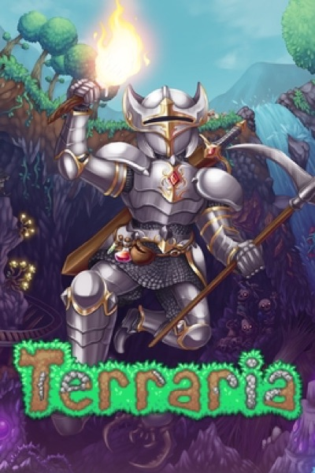

Simulation · 2011
Terraria
2D survival crafting with a boss list as long as its item list.

Cover: Wikipedia: Terraria
Facts
- Released
- 2011-05-17
- Genre
- Sandbox
- Category
- Simulation
- Platforms
- Mobile, Nintendo, PC, PlayStation, Xbox
- Developers
- 505 Games, Engine Software, Re-Logic
- Publishers
- 505 Games, Pipeworks Software, Re-Logic, Spike Chunsoft
PC requirements
- Minimum
- [object Object]
- Recommended
- [object Object]